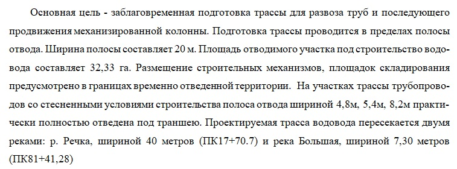
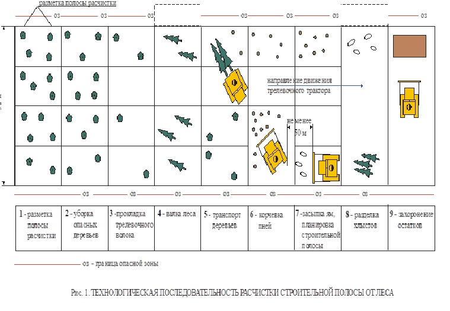

Подготовка трассы

Расчистка трассы линейных сооружений
Трассы нефте-, газо-, водоводов и линий электропередач часто проходят по густо заросшей территории. Особое внимание уделяется заблаговременной подготовке полосы отвода для развоза труб и работы механизированной колонны. В разделе указываются ширина полосы отвода и общая площадь, выделенная под строительство объекта.
Прописываются места размещения техники, площадки для складирования материалов, а также особенности, связанные со стесненными условиями. Обязательно обозначаются пересечения трассы с водными преградами.

Описывается способ расчистки и перечисляются деревья, подлежащие удалению.
Посмотрите видео, где наглядно представлен пример того, как выглядит временная лежневая дорога.
Такая дорога выдерживает экскаватор весом 22 тонны. Стволы деревьев связывают стальной проволокой. Так дорога станет прочнее и устойчивее.
Для крупных деревьев, которые могут использоваться при строительстве или подлежат сдаче в Лесхоз, указывается состав бригады и порядок проведения работ.
Дополнительно прикладываем схему расчистки просеки.

Если трасса проходит через болотистые участки, описывается последовательность лесоповалочных работ: стволы деревьев срезают на уровне земли, корневая система сохраняется. Пни используют как основание для временных лежневых и насыпных дорог.
На полосе траншеи выкорчевывают только крупные пни; мелкие удаляются по мере разработки траншеи.